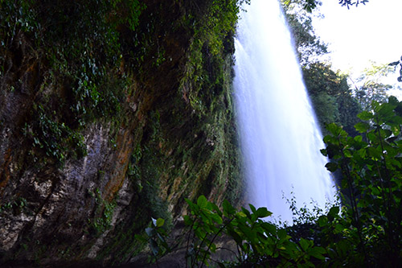
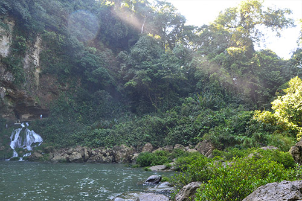
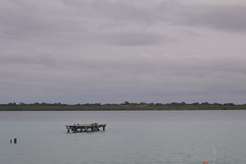
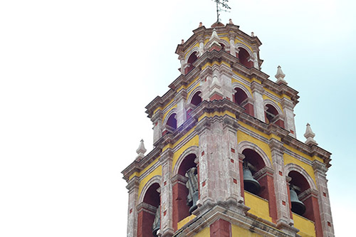

Album fotografico vol.1
Inicio
Personas
Animales
Paisajes
Las composiciones que no conllevan una persona u objeto también son de mi agrado, los paisajes de la naturaleza y estructuras antiguas son mis preferidas para fotografía.
   